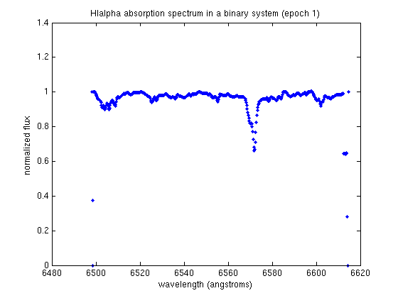
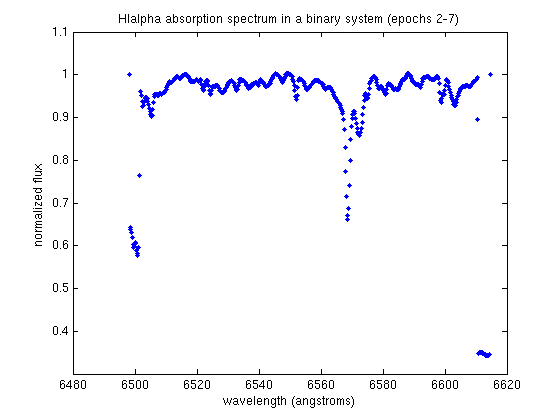
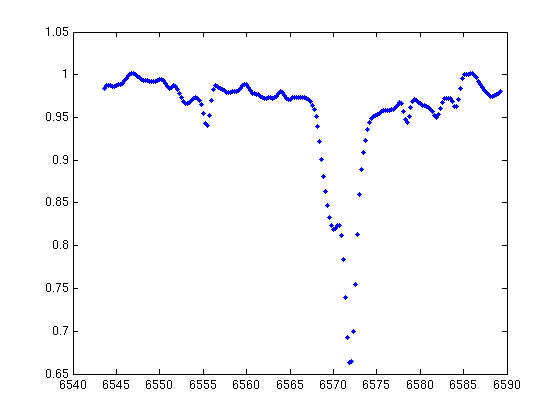
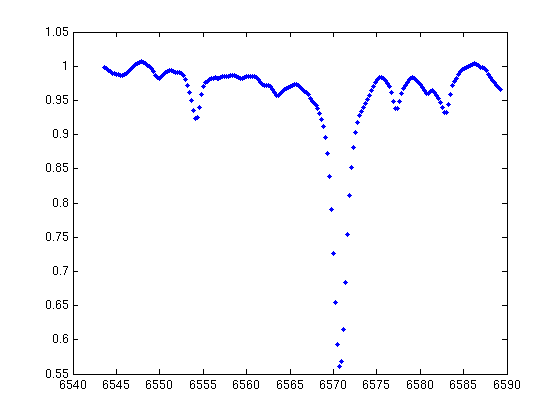
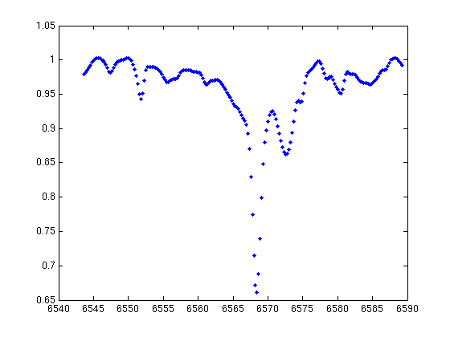
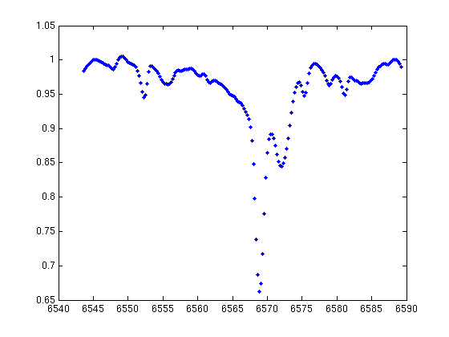
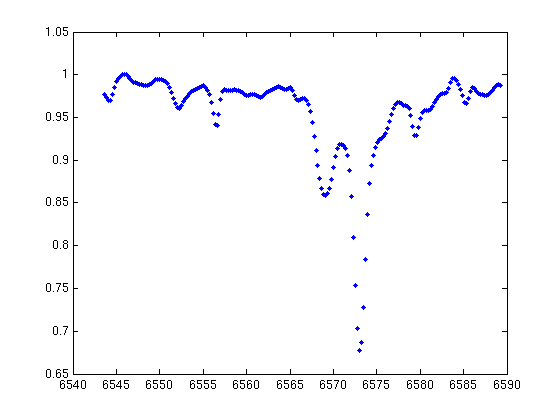
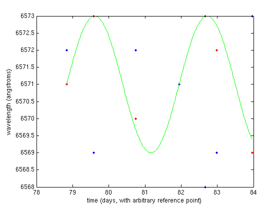

Binary Stars and Stellar Masses
In this lab the student uses spectra taken at 7 times for a binary star system for which one can identify the Halpha absorption line and obtain from it a radial velocity measurement. The student then uses measures of shifts in the absorption line wavelength in order to determine the total mass of the binary system.
Contents
Loading data
% First we must load the 7 spectra from this spectroscopic binary containing % the absorption lines which we will use to determine orbital period. load('binary1.dat') load('binary2.dat') load('binary3.dat') load('binary4.dat') load('binary5.dat') load('binary6.dat') load('binary7.dat') % Now there are seven matricies, binary1, etc, containing two columns: the % first gives the wavelength in angstroms for the spectrum and the second % gives a normalized flux. % Let's plot one of these spectra: figure(1); clf plot(binary1(:,1), binary1(:,2),'.') xlabel('wavelength (angstroms)') ylabel('normalized flux') title('HIalpha absorption spectrum in a binary system (epoch 1)') % The primary feature of this spectrum is the HIalpha absorption line. Note % that it is doubled, as this spectrum is the combined spectrum of both % stars. Since it is not clear that it is doubled in this spectrum, let's % look at the next: hold off figure(2); clf plot(binary2(:,1), binary2(:,2),'.') xlabel('wavelength (angstroms)') ylabel('normalized flux') title('HIalpha absorption spectrum in a binary system (epochs 2-7)') % The separation of the two features, relativistically shifted with respect % to one another, is now much more evident. 
Measurements
% Consider our first plot. In this case the absorption lines are nearly % coincident in wavelength, suggesting that at this point in time the stars % were moving nearly perpendicular to our line of sight, and the wavelength % of the absorption line should be it's rest-frame wavelength. % We can use [c,i] = min(binary1(200:400,2)) % to find the position of the minimum (lowest point in absorption line % profile). The value of c is that of the wavelength at the minimum, and i % is the array index of this value in binary1(10:505) (note it is NOT the % array index for the value in binary1, rather the sub-set we chose in % order to avoid unrealistic minima at the edge). The '2' identifies the % dimension in our matrix we're feeding min() along which to find the % minimum. rest = c; % Now go to the second plot. select the 'data cursor' tab and click on the % data point at each minima of the profiles, and record these values. In % fact, plot all the data and record all the position in wavelength of the % minima: hold off figure(3) plot(binary3(200:400,1), binary3(200:400,2),'.') figure(4) plot(binary4(200:400,1), binary4(200:400,2),'.') figure(5) plot(binary5(200:400,1), binary5(200:400,2),'.') figure(6) plot(binary6(200:400,1), binary6(200:400,2),'.') figure(7) plot(binary7(200:400,1), binary7(200:400,2),'.') % putting these values into arrays (relative strength of features signifies % which star is which): bin1lambda = [6571,6573,6570,6571,6573,6572,6569] %weaker absorption feature bin2lambda = [6572,6569,6572,6571,6568,6569,6573] %stronger % And now we can plot these: t = [78.831,79.581,80.742,81.943,82.670,82.982,83.960] % tracking of Julian date (subtracted off constant of time): hold off; figure(8); plot(t,bin1lambda,'.r') hold on plot(t,bin2lambda,'.b') ylabel('wavelength (angstroms)') xlabel('time (days, with arbitrary reference point)') % Conveniently there appears to be another time at which the stars are % moving perpendicular to the line of sight at t(4). So we can estimate the % period to be an integer (or 1/integer) multiple of this time. If we guess % that it's one half of a complete period: tforsin = linspace(t(1),t(7),300); % I overplot a function to fit to the red dots of the form % A sin((t-t_phase)*2pi / P) where t_phase is a time phase shift and P is % the period of the binary orbit. yr = bin1lambda(1)+(bin1lambda(2)-bin1lambda(1))*sin((tforsin-t(1)) * 2*pi/(t(4)-t(1))); plot(tforsin,yr,'g') % This fits, by eye, the data rather well. So, P = (t(4)-t(1))/365 % period in years % Now, maximum LOS velocity together with the orbital period gives limit on orbital % radius and then P and radius gives total mass. First we find the % velocity: v = 3e8 * (bin1lambda(2)-bin1lambda(1)) / bin1lambda(1) % in m/s % Assuming a circular orbit we can get the minimum radius: m2au = 6.68e-12; % meter in au units s2yr = 3.17e-8; % second in yr units r = v*(m2au/s2yr)*P / 2 / pi; % radius in au a = 2*r % semimajor axis, if we assume a circular orbit and nearly equal masses. % The fact that the velocity shifts of the lines are greater for one star % than the other would imply unequal masses, but we do not have enough data % to determine the mass ratio accurately. M = 4*pi^2 * a^3 / P^2 % gives total mass of the two stars in solar masses (G=1 in these units). % Rather massive stars, but not unreasonably large! We've found the mass of % the system!
c =
0.6594
i =
125
bin1lambda =
Columns 1 through 6
6571 6573 6570 6571 6573 6572
Column 7
6569
bin2lambda =
Columns 1 through 6
6572 6569 6572 6571 6568 6569
Column 7
6573
t =
78.8310 79.5810 80.7420 81.9430 82.6700 82.9820 83.9600
P =
0.0085
v =
9.1310e+04
a =
0.0522
M =
77.3335
     